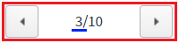

PageControl의 'setCount' 메소드를 사용하여 총 페이지수를 설정하는 예제입니다.
PageControl의 총 페이지수를 설정하기
1
STEP 1: 초기 상태를 확인합니다.
PageControl의 총 페이지 수는 10으로 정의되어 있고, 현재 페이지는 3이 설정된 상태입니다.
Image 1.브라우저(Chrome) 실행 예시

2
STEP 2: PageControl의 총 페이지 수를 8으로 설정합니다.
'총 페이지 수를 8로 설정하기' 버튼을 클릭합니다.3
STEP 3: 실행된 결과를 확인합니다.
Image 2.브라우저(Chrome) 실행 예시
4
STEP 4: PageControl의 총 페이지 수를 5으로 설정합니다.
'총 페이지 수를 5로 설정하기' 버튼을 클릭합니다.5
STEP 5: 실행된 결과를 확인합니다.
Image 3.브라우저(Chrome) 실행 예시
PageControl의 'setCount' 메소드를 사용하여 스크립트를 작성합니다. 세부 설정은 아래의 스크립트 예시에 작성되어 있습니다.
Example 1.Script
//예제 파일에서는 스크립트 scwin.btn_exam1_1_onclick, scwin.btn_exam1_2_onclick에 작성되어 있습니다. // PageControl 'pgc_exam'의 총 페이지 수를 8로 설정합니다. pgc_exam.setCount(8);
setCount( count )